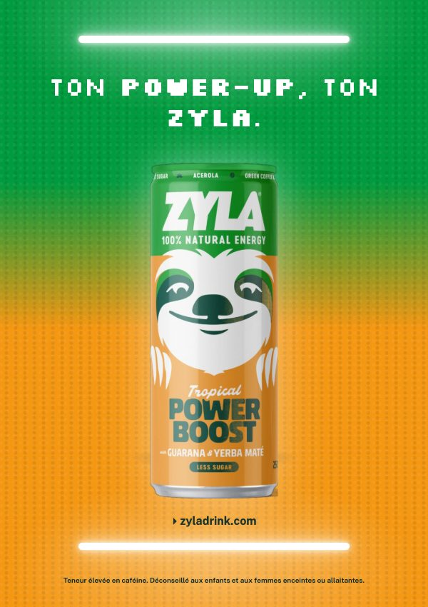
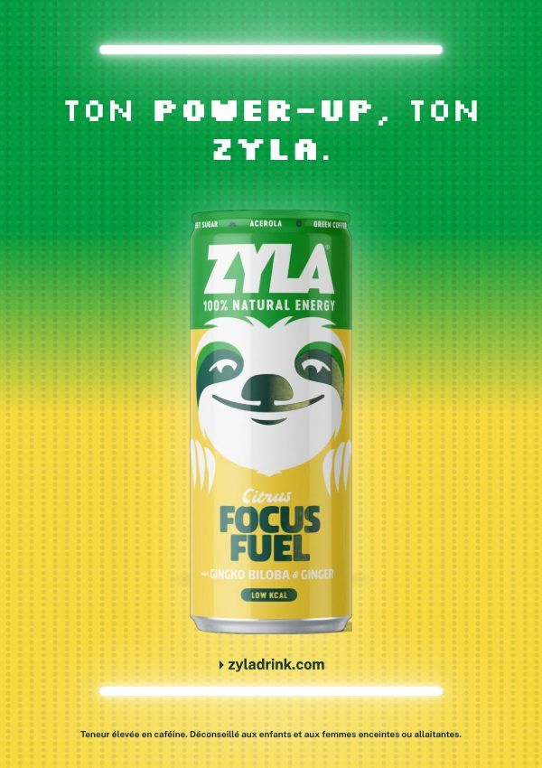
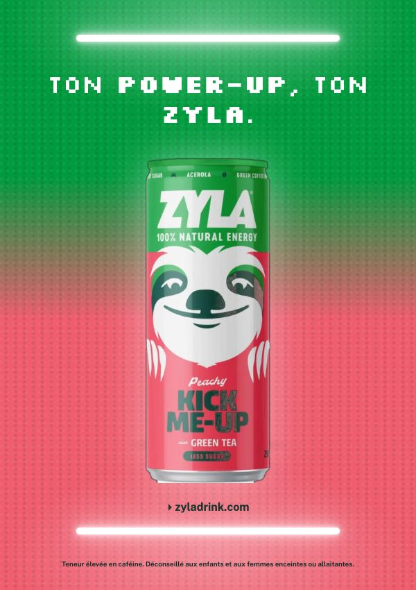

Expériences & terrains de jeu :
Une campagne 360° pour Zyla, la boisson énergisante naturelle de Spadel. L'idée : chaque canette devient un « power-up », comme dans un jeu vidéo, que tu choisis selon ton moment de la journée. Cible : les 18-25 ans.
Projet d'école réalisé au sein de l'agence fictive Kaizoku. Zyla et Spadel n'ont pas commandé ce travail.



Six projets réels. Glisse pour tourner, clique pour ouvrir.
Et ce que j'apprends chaque semaine.
Faire circuler la bonne info, au bon moment, auprès des bonnes équipes.
Articles intranet, posts, newsletters : clairs, courts, lus jusqu'au bout.
Logistique, planning, coordination le jour J. Rien n'est laissé au hasard.
Positionnement, analyse de la concurrence, message clé, plan média.
Calendriers éditoriaux, formats courts, ton de marque.
Je m'en sers pour aller plus vite, pas pour penser à ma place.
Je m'appelle Elyas, j'étudie la communication à Bruxelles. J'ai passé deux mois à la Commission européenne, dans l'unité qui s'occupe du développement de l'organisation et de la communication de la DG DIGIT : articles pour l'intranet, communication interne, logistique d'événements. J'aime quand un message simple fait bouger des gens. Je cherche des projets concrets, des marques locales et des équipes qui ont envie de mieux se raconter.